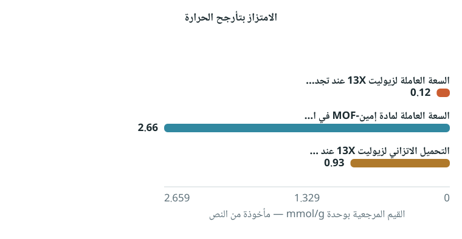

الامتزاز بتأرجح الحرارة
Temperature-swing adsorption
فصل غازات يُحمَّل فيه السرير عند حرارة منخفضة ويُجدَّد برفع حرارته؛ فالسعة العاملة هي الفرق بين تحميلَي الحرارتين، وهي التي تحدد كتلة المازّ اللازمة.
الامتزاز بتأرجح الحرارة عملية فصل تعتمد على أن التحميل الاتزاني للمازّ ينخفض بارتفاع الحرارة عند ضغط ثابت. يُمرَّر الغاز على السرير باردًا فيُحتجز المكوّن المستهدف، ثم يُسخَّن السرير فينطلق المحتجز ويتجدّد المازّ، ثم يُبرَّد للعودة إلى الدورة التالية. الفرق بين التحميل عند حرارة الامتزاز والتحميل عند حرارة التجديد هو السعة العاملة، وهو الرقم الذي يحدد كتلة المازّ المطلوبة لكل كيلوغرام من المنتج. والتجديد الحراري يستهلك طاقة في تسخين المازّ نفسه وفي تبريده بعد ذلك، وهي حرارة محسوسة لا تُسترد كلها، ولذلك تكون دورات العملية أطول وسرائرها أكبر من سرائر الامتزاز بتأرجح الضغط. وتُستخدم العملية حيث يكون المكوّن المستهدف شديد الامتزاز ويصعب انتزازه بالضغط وحده، كما في التقاط ثاني أكسيد الكربون من الغازات المخلخلة.
كيف تعمل الظاهرة؟
الآلية تقوم على أن الامتزاز الفيزيائي عملية ناشرة للحرارة: رفع حرارة السرير يزيد الطاقة الحركية للجزيئات الممتزّة فيقلّ ميلها للبقاء على السطح، فينخفض التحميل الاتزاني عند الضغط نفسه. عمليًّا يُسخَّن السرير بغاز ساخن أو ببخار أو بحرارة غير مباشرة عبر جدار، فينطلق المحتجز في تيار غاز التجديد، ثم يُبرَّد السرير قبل الدورة التالية وإلا مرّ الغاز المستهدف دون أن يُحتجز. وتُضاف إلى ذلك مقاومة انتقال الحرارة داخل حبيبات المازّ، وهي التي تجعل التسخين والتبريد أبطأ من تغيير الضغط بكثير.
العلاقة بالأرقام
السعة العاملة تُحسب فرقًا بين تحميلين اتزانيين عند الحرارتين، وتُقاس بالمليمول لكل غرام أو بالكيلوغرام لكل كيلوغرام. في مثال التقاط ثاني أكسيد الكربون من الهواء عند 373 كلفن وتفريغ 4000 باسكال: زيوليت 13X عند 0.123 مليمول لكل غرام، ومادة إمين-MOF عند 2.659 مليمول لكل غرام، بينما التحميل الاتزاني لزيوليت 13X عند 298 كلفن و1000 جزء في المليون هو 0.925 مليمول لكل غرام. والفارق بين 0.925 و0.123 هو ما يفسّر ضعف الإنتاجية. وزمن الدورة الكاملة 5 ساعات و22 دقيقة، منها 10800 ثانية انتزاز.
مفاهيم متقاربة
الامتزاز بتأرجح الحرارة ليس امتزازًا بتأرجح الضغط: هناك يُصرف الشغل على ضاغط، وهنا تُصرف الحرارة على كتلة المازّ نفسها، وهي كتلة كبيرة تُسخَّن وتُبرَّد في كل دورة فتُهدر حرارة محسوسة. وليس تجفيفًا بالهواء الساخن: التجفيف يزيل الرطوبة لتجنّب إفساد عملية أخرى، وهنا الفصل هو الغرض. وليس امتصاصًا حراريًّا: الامتصاص يذيب الغاز في سائل ويُجدَّد بغلي السائل، وهنا السطح الصلب هو الفاعل. وليس امتزازًا بتأرجح الحرارة والتفريغ: ذاك يجمع الحرارة مع خفض الضغط تحت الجوي.
حدود التطبيق
الحدّ الأول هو الطاقة: تسخين كتلة المازّ وتبريدها يستهلك حرارة محسوسة كبيرة، وتُظهر الحسابات أن الحرارة المحسوسة قد تشكّل النصيب الأكبر من عقوبة الطاقة. والحدّ الثاني هو الزمن: الدورات بالساعات لا بالثواني، فالسرير كبير والاستثمار عالٍ. والحدّ الثالث هو الانتقائية: المازّات الفيزيائية مثل زيوليت 13X تنتقي ثاني أكسيد الكربون على النيتروجين انتقاءً ضعيفًا، فتنخفض نقاوة المنتج. والحدّ الرابع هو أن الأرقام المذكورة من محاكاة عملية منشورة لا من قياس أجريناه، وتُقرأ على أنها كذلك.

| الكمية | القيمة | المصدر |
|---|---|---|
| السعة العاملة لزيوليت 13X عند تجديد حراري-تفريغي | 0.123 mmol/g | [1] |
| السعة العاملة لمادة إمين-MOF في الدورة نفسها | 2.659 mmol/g | [1] |
| التحميل الاتزاني لزيوليت 13X عند 1000 ppm | 0.925 mmol/g | [1] |
| زمن الدورة الكاملة في عملية تجديد حراري-تفريغي | 5 ساعات و22 دقيقة — | [1] |
المصادر
- 1 Temperature-vacuum swing adsorption for direct air capture by using low-grade heat — Journal of Cleaner Production (Elsevier، وصول مفتوح) (2023). discovery.ucl.ac.uk/id/eprint/10172838/1/1-s2.0-S0959652623018899-main.pdf · اطُّلع عليه 2026-11-28
- 2 Bench-Scale Development and Testing of Rapid PSA for CO2 Capture (kickoff presentation) — U.S. Department of Energy — NETL (2012). www.netl.doe.gov/sites/default/files/2017-12/rapid-pressure-swing-adsorption-kickoff-july2012.pdf · اطُّلع عليه 2026-11-28
استشهد بهذا المصطلح
الصيغتان مبنيتان من بيانات الصفحة نفسها: العنوان والتاريخ ورابط النسخة المنشورة.
الامتزاز بتأرجح الحرارة — Temperature-swing adsorption. (2026). ديوان المعرفة — انفراد. https://infiradev.com/diwan/terms/term-temperature-swing-adsorption.html
@misc{term-temperature-swing-adsorption2026,
title = {الامتزاز بتأرجح الحرارة},
titleaddon = {Temperature-swing adsorption},
howpublished = {{ديوان المعرفة — انفراد} — مرجع علمي عربي},
year = {2026},
url = {https://infiradev.com/diwan/terms/term-temperature-swing-adsorption.html},
urldate = {2026-11-28},
note = {مراجعة علمية: Abdullah Al-Huwaidi}
}
راجعه: Abdullah Al-Huwaidi · 2026-11-28 · آخر تحديث 2026-11-28